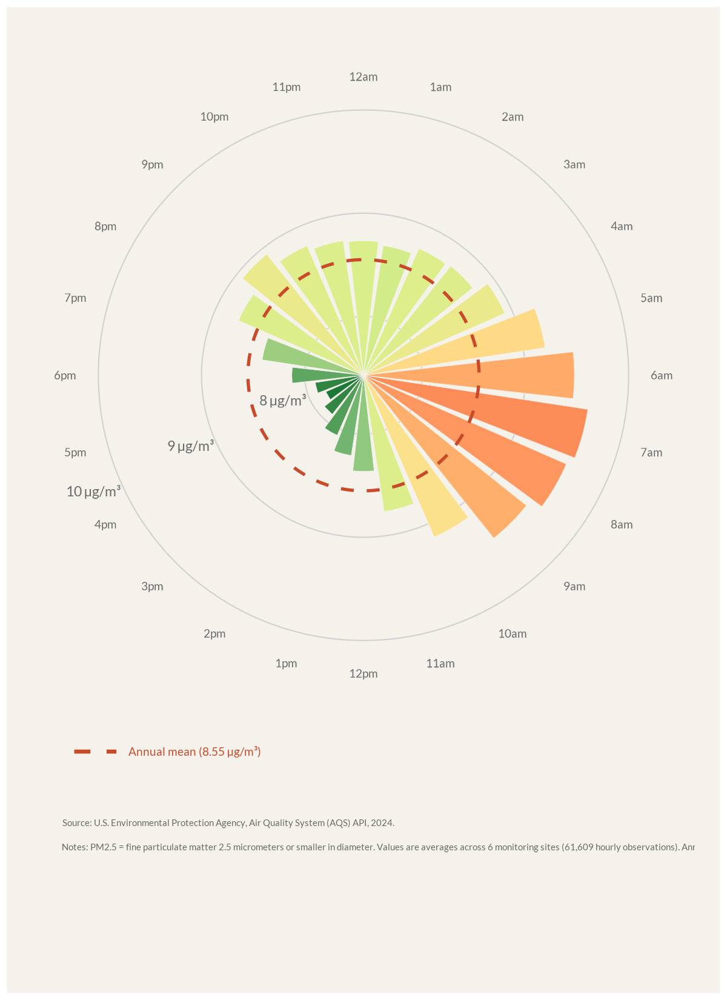

Day 08 · April 2026 · Distributions · Circular
Average PM2.5 concentrations by hour of day in Philadelphia, 2024 — measured across 6 EPA monitoring sites. Each bar represents one hour of the day; longer bars and warmer colors indicate higher PM2.5 levels and worse air quality.

| Good | 0–12 µg/m³ |
| Moderate | 12.1–35.4 |
| Unhealthy for sensitive groups | 35.5–55.4 |
| Unhealthy | 55.5–150.4 |
| Very unhealthy | 150.5–250.4 |
| Hazardous | 250.5+ |
Philadelphia's 2024 hourly readings fall within the Good category for all 24 hours of the day.
Hourly averages computed by first averaging within each of 6 monitoring sites, then averaging across sites — ensuring equal site weighting regardless of observation count.